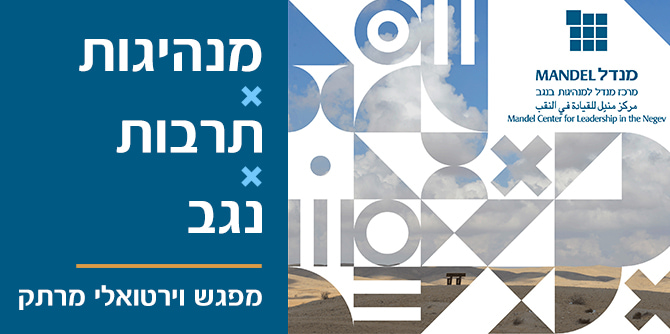

As part of the Mandel Center for Leadership in the Negev’s commitment to developing a thriving cultural life in the Negev, an online event was held that brought together fellows and graduates of the Mandel programs for cultural leadership and activists and entrepreneurs in the Negev and beyond. The event, which was made up of four conversations of approximately 15 minutes each held one after the other, examined the essence of cultural life and its importance across four main themes: entrepreneurship, connections, identity, and hope. It was broadcast live from a studio set up specially for the occasion at the Mandel Center for Leadership in the Negev.
At the beginning of the event, Dr. Adi Nir-Sagi, director of the Center, restated the Center’s commitment to developing cadres of leaders dedicated to promoting culture and the arts in the Negev, via a unique training program for cultural leaders in the Negev. The heads of the current cohort of the Mandel Program for Cultural Leadership in the Negev, Professor Dana Arieli and Dr. Itzhak (Kiki) Aharonovich, then presented a brief overview of the program and called for new candidates to apply for the fourth cohort.
The first conversation was between Neta Meisels, founder and CEO of The Factory in Jerusalem, and a graduate of Cohort 1 of the Mandel Program for Leadership in Jewish Culture of the Mandel Leadership Institute in Jerusalem, and Yogev Vanounou, one of the founders of Homa, a nonprofit association of artists in the Negev, and a graduate of Cohort 2 of the Mandel Program for Cultural Leadership in the Negev. They spoke about grassroots cultural entrepreneurship, about connections between groups and between active group members, and about working with different state authorities.
In the second conversation, Mor Hanay, a film director, screenwriter, and graduate of Cohort 1 of the Mandel Program for Cultural Leadership in the Negev, spoke with Natalia Zourabova, a figurative visual artist, about the importance of art for the community and about communicating messages through art.
The issue of identity, which came up in the discussion between Mor and Natalia, was the focus of the third conversation, between Kobi Ifrach, one of the founders of Kulna and Elul Min Hamizrach, and Rada Ambachow , an entrepreneur, businessman, and graduate of the Mandel Program for Local Leadership in Ofakim. They discussed immigration and collaborative artistic endeavors in areas with immigrant communities, as well as the sources of inspiration for artists from immigrant communities that have struggled in Israel.
In the final conversation, Ktnani Marei, a fellow of Cohort 3 of the Mandel Program for Cultural Leadership in the Negev and director of the Rahat Cultural Center, spoke with Salm Alassam, a Bedouin artist and part of the renaissance movement of Dahiya poetry. These two speakers expressed their hope for a common, creative, and joyful future in the Negev.
The virtual event was produced by the Spark group, under the direction of Reshef Benishti, a graduate of the Mandel Program for Local Leadership in Ofakim. The large number of participants – more than 100 – emphasized the great interest in culture and the arts, new initiatives, and the possible connections between the different identities that exist in the Negev. The event also filled the participants with hope that activities and events will bring the region’s cultural richness and diversity to the attention of Negev residents and the residents of Israel as a whole.
Watch the full Hebrew event below.
{kind=link}